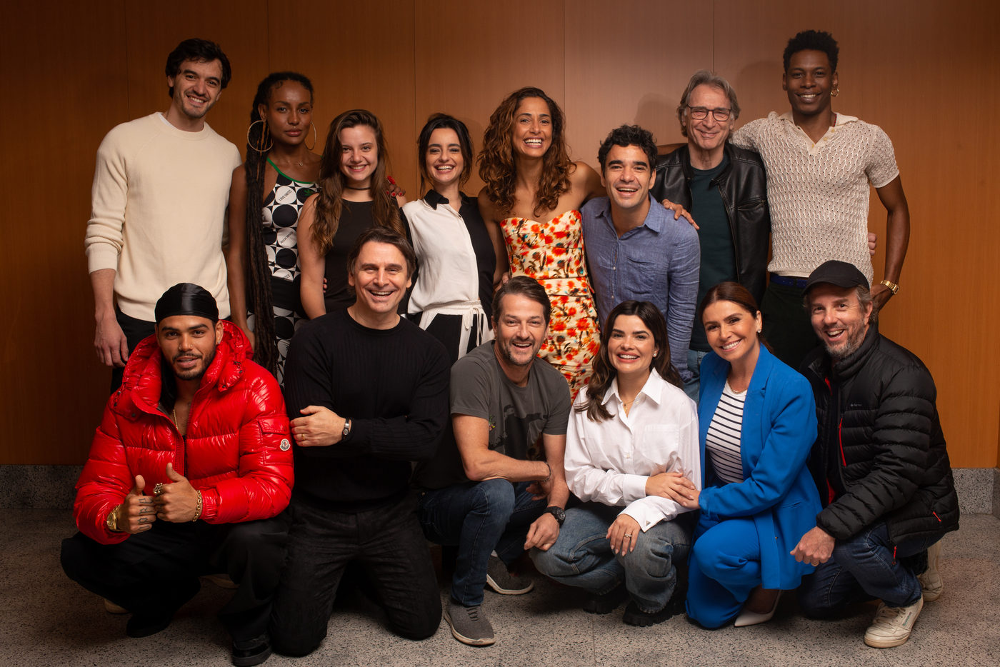

Elenco de ‘Beleza Fatal’, primeira novela original da HBO MAX, se reúne para leitura de roteiro

No último domingo, um encontro marcante aconteceu no Rio de Janeiro. O elenco da primeira novela original da HBO Max na América Latina, "BELEZA FATAL", uniu-se para participar da leitura do roteiro da aguardada produção. Estiveram presentes na reunião diversos membros do elenco, incluindo Breno Ferreira, Manu Morelli, Kiara Felippe, Santiago Acosta, Júlia Stockler, Murilo Rosa, Camila Pitanga, Herson Capri, Augusto Madeira, Marcelo Serrado, Vanessa Giácomo, Caio Blat, Giovanna Antonelli e Romaní.
O elenco também contará com Camila Queiroz, Naruna Costa, Georgette Fadel, Patricia Gasppar, Luciano Chirolli, Marat Descartes e Mariana Molina, que fazem parte do elenco da novela.
A trama, que leva o título de "BELEZA FATAL", foi criada por Raphael Montes e conta com a direção de Maria de Médicis. Ambos estiveram presentes durante a leitura do roteiro, contribuindo para a imersão nesse universo intrigante.
Composta por 40 capítulos, a novela promete envolver o público em uma história emocionante, situada no mundo agitado da beleza e dos tratamentos estéticos, onde a busca por justiça ganha destaque. Apesar de toda a expectativa gerada em torno dessa produção, a data de lançamento de "BELEZA FATAL" ainda não foi divulgada.